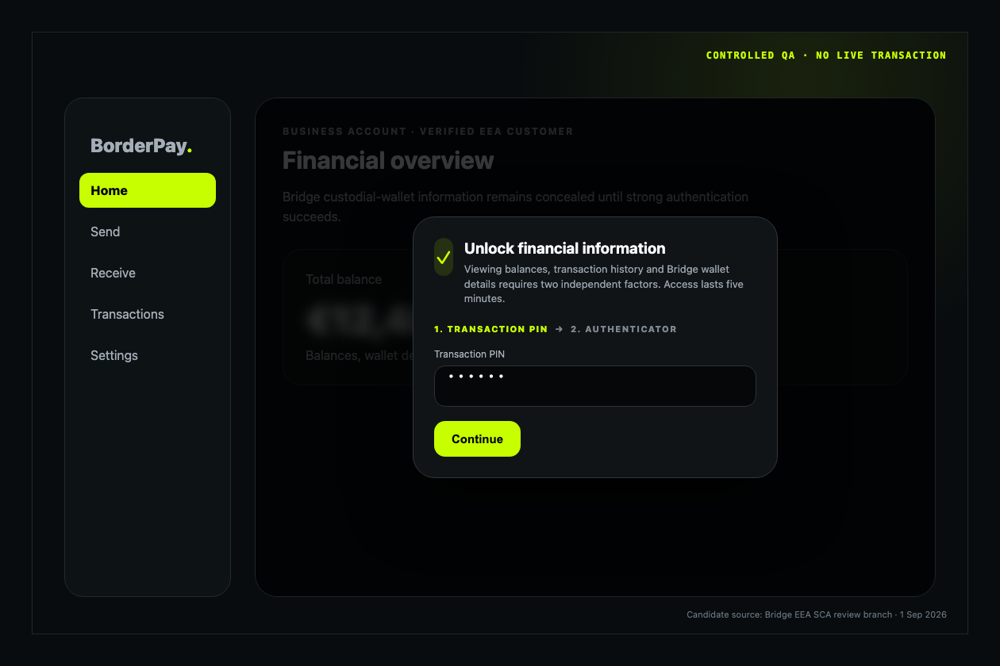
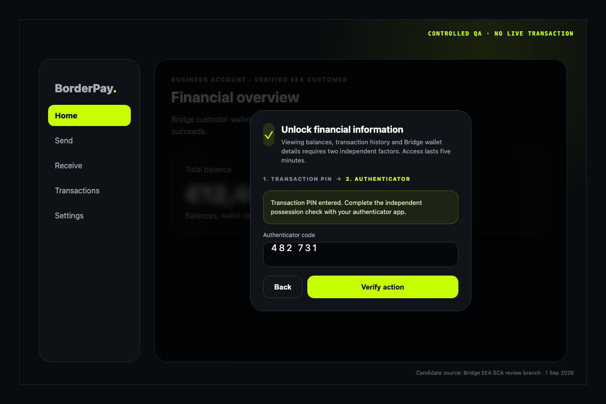
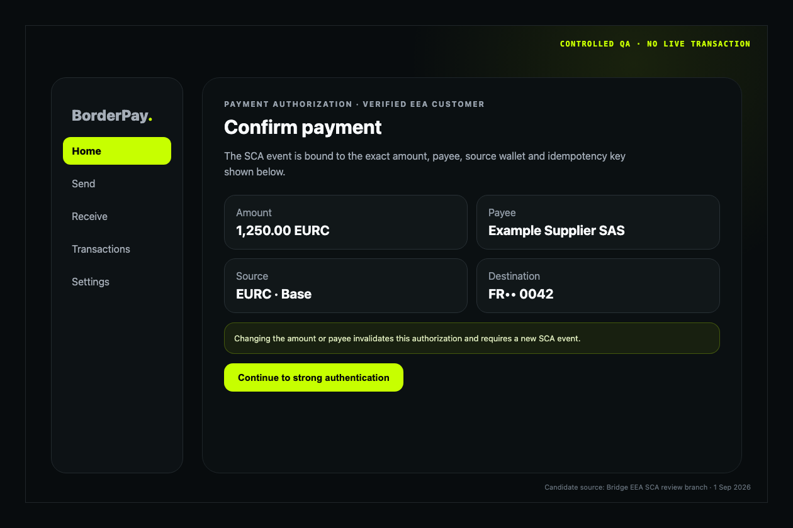
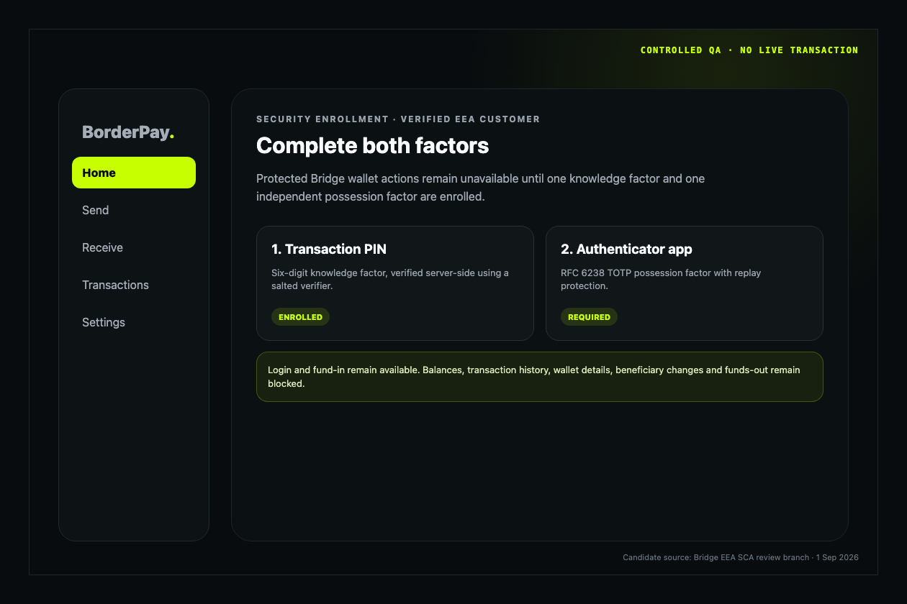
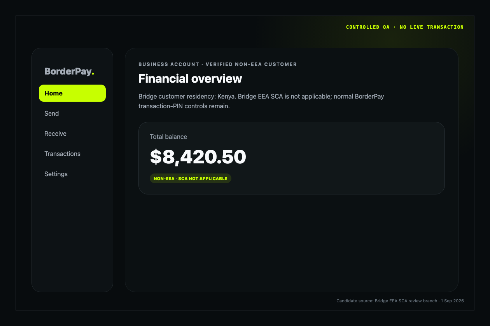
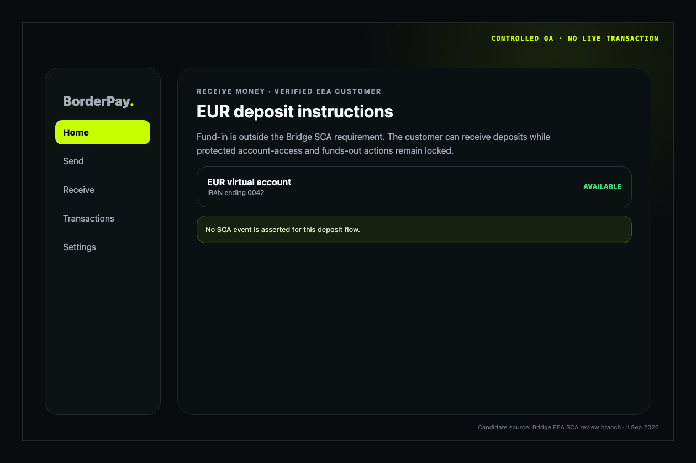

Submission type: Initial QA evidence pack
Prepared: 1 September 2026
Implementation model: Directly implemented multi-factor authentication
Status: READY FOR INITIAL QA - production validation remains disabled until Bridge approval
Authoritative materials reviewed:
initiation object with attestations.sca.outcome; and
Bridge SCA applies only when both conditions are true:
The EEA scope is EU-27 plus Iceland, Liechtenstein, and Norway. The United Kingdom and Switzerland are excluded. Login is not an SCA-protected action. Fund-in/deposit flows and non-custodial wallets are excluded.
Protected actions are:
The server binds the authenticated BorderPay user to one Bridge customer, reads Bridge's customer country, records the provider-derived scope with a bounded lifetime, and fails closed when an in-scope decision cannot be established. Browser-supplied country values are not authoritative.
Source references:
supabase/functions/sca-authorize/index.tssupabase/functions/_shared/sca.tssupabase/functions/_shared/bridge-identity-invariant.tssupabase/migrations/20260826120000_provider_scoped_sca_financial_reads.sqlsupabase/migrations/20260826123000_provider_scoped_sca_admin_bypass.sqlsupabase/migrations/20260831193000_sca_fail_closed_activation.sqlsupabase/migrations/20260901120000_bridge_eea_sca_controlled_activation.sqlBoth the Edge authorization service and database read policies have an
explicit Bridge-EEA rollout control. It defaults off. Activation is blocked
until Bridge approves QA, compatible clients are released, and the
service-role preflight reports zero missing or expired provider scopes.
flowchart TD
A[Authenticated BorderPay user] --> B[Bind to immutable Bridge customer ID]
B --> C[Read Bridge customer verification and country]
C --> D{Verified EEA customer?}
D -- No --> E[Bridge SCA not required]
D -- Unknown/error --> F[Fail closed for protected financial access]
D -- Yes --> G{Action touches Bridge custodial wallet?}
G -- No --> E
G -- Yes --> H[Require Bridge SCA]
BorderPay uses two factors from different Bridge-accepted categories:
Email OTP, magic links, IP address, device fingerprint, and two knowledge factors are not accepted as the possession factor. The user's normal login is not treated as completion of the Bridge SCA event.
Factor independence:
Source references:
supabase/functions/sca-authorize/index.tssupabase/functions/verify-pin/index.tssupabase/functions/verify-2fa/index.tssupabase/migrations/20260821170000_universal_sca_authorizations.sqlFor an in-scope action, the user sees the exact action context, enters the transaction PIN, and then enters the authenticator code. The server verifies both factors and issues a short-lived, user-bound, operation-bound authorization. The protected Edge Function atomically consumes that authorization before it calls Bridge.
An authorization is never created for a failed factor check. It expires within five minutes and can be consumed only once.
sequenceDiagram participant U as EEA customer participant C as BorderPay client participant S as SCA authorization service participant F as PIN and TOTP verifiers participant T as Protected transfer service participant B as Bridge API U->>C: Confirm displayed amount and payee C->>S: Exact intent plus PIN and TOTP S->>F: Verify PIN, then replay-protected TOTP F-->>S: Two independent factors verified S-->>C: Short-lived intent-bound authorization ID C->>T: Same intent plus authorization ID T->>T: Atomically consume exact authorization T->>B: Transfer plus SCA initiation attestation B-->>T: Provider response
Controlled QA screenshots (each is visibly marked as non-production):
artifacts/bridge-sca-evidence/screenshots/01-account-access-pin.pngartifacts/bridge-sca-evidence/screenshots/02-account-access-totp.pngartifacts/bridge-sca-evidence/screenshots/03-payment-context.pngartifacts/bridge-sca-evidence/screenshots/04-factor-enrollment.pngartifacts/bridge-sca-evidence/screenshots/05-non-eea-bypass.pngartifacts/bridge-sca-evidence/screenshots/06-fund-in-excluded.pngThese captures demonstrate the candidate UI and scope behavior without calling
Bridge or moving customer funds. A live or production recording will be made
only in a Bridge-authorized QA window.
The authorization hash is SHA-256 over a deterministic canonical representation of the operation resource and exact request. The canonical transfer intent includes the amount, destination/payee, source, destination rail, currency, and idempotency key. Credential fields and the authorization ID are excluded.
Changing the amount, payee, operation resource, or idempotency key produces a different hash. The protected transfer function rejects the original authorization and requires a new SCA event. Database consumption is atomic and requires an unexpired, unconsumed authorization whose user, operation, resource, and hash all match.
Source and test references:
supabase/functions/_shared/sca.tssupabase/functions/bridge-transfer/index.tssupabase/migrations/20260821170000_universal_sca_authorizations.sqltests/universal-sca.test.tsCaptured controlled results are indexed in
artifacts/bridge-sca-evidence/dynamic-linking-test-results.txt. They prove
that amount, payee, resource and idempotency-key changes produce a different
authorization hash. Atomic database consumption additionally rejects an
expired, consumed or mismatched authorization.
Bridge support corrected the earlier PDF structure. BorderPay will submit one initiation object with channel, subchannel, and nested attestations.sca.outcome:
{
"amount": "10.00",
"on_behalf_of": "<pseudonymised-customer-id>",
"source": { "...": "redacted" },
"destination": { "...": "redacted" },
"initiation": {
"channel": "other",
"subchannel": "remote",
"attestations": {
"sca": {
"outcome": "sca_used"
}
}
}
}
For a native mobile initiation, the proposed channel is other_mobile_payment; web uses other; all current BorderPay Bridge flows use remote. BorderPay does not claim an exemption and uses sca_used only after successful authorization consumption.
Source references:
supabase/functions/_shared/sca.tssupabase/functions/_shared/providers/types.tssupabase/functions/bridge-transfer/index.tsNo production transfer test will be attempted until Bridge authorizes QA.
An EEA customer cannot complete an SCA-protected action until both the transaction PIN and authenticator factor are enrolled. Removing or replacing an active authenticator is itself a protected security change. Login remains available, but account access, beneficiary changes, and funds-out remain blocked until the two-factor requirement is restored.
The enrollment capture proves that both factors are required before protected
access. The approved implementation policy is
docs/BRIDGE_EEA_SCA_RECOVERY_POLICY.md. Password recovery and active-factor
replacement start a 24-hour server-enforced restriction. Login and fund-in
remain available; account access, beneficiary changes, funds-out and sensitive
credential changes remain blocked.
The application records authorization success, authorization failure, consumption, and rejection with a pseudonymous user identifier, operation, resource, payload hash, reason code, and timestamp. It does not write PINs, TOTP codes or seeds, passwords, biometric templates, private keys, or raw transfer payloads into the SCA audit record.
Source references:
public.sca_audit_events in supabase/migrations/20260821170000_universal_sca_authorizations.sqlsupabase/functions/sca-authorize/index.tspublic.consume_sca_authorizationCredential-free controlled samples are included for:
The candidate records an explicit authorization_locked event after five
failed attempts within fifteen minutes. Unknown or expired provider scope is
not treated as proof of non-EEA residence: protected customer reads and
actions fail closed until a current Bridge-derived scope exists.
The source candidate now exports sanitized SCA audit mutations into BorderPay's hash-chained external-audit delivery ledger. The delivery worker requires independently signed COMPLIANCE object-lock receipts covering at least 1,827 days for SCA records.
Source references:
supabase/migrations/20260831190000_sca_audit_external_retention.sqlsupabase/functions/certification-audit-delivery/index.tssupabase/functions/_shared/certification-audit.tsThe tamper-resistance design uses a hash-chained local outbox and an
independently administered append-only sink. The delivery worker accepts a
receipt only when its Ed25519 signature, event identity/hash, COMPLIANCE
object-lock mode, and minimum retention of 1,827 days all verify. A real sink
receipt and delivery-health result will be captured during Bridge-authorized
QA; no production receipt is fabricated for this initial submission.
Required monitoring coverage:
The sca-monitoring worker runs every five minutes, creates deduplicated
alerts, and forwards them through the logged operator-email path. Its policy
and response procedure are documented in
docs/BRIDGE_EEA_SCA_MONITORING_AND_INCIDENT_RUNBOOK.md; controlled alert
samples are included with the evidence artifacts.
Bridge reporting obligations recorded for the operating procedure:
Named contacts:
markikaba@borderpayafrica.com; andsca-incidents@bridge.xyz.| Bridge requirement | Evidence | Status |
|---|---|---|
| EEA/custodial scope | Architecture and source references in section 1 | Ready for review |
| Two independent factors | Independence analysis in section 2 | Ready for review |
| Factor sequence | Controlled QA PIN and TOTP screenshots | Ready for initial QA |
| Dynamic linking | Source and controlled test results | Ready for initial QA |
| Safe enrollment | Controlled screenshot and server enforcement | Ready for initial QA |
| Recovery | 24-hour restriction and assisted-recovery policy | Ready for initial QA |
| Successful/failed/lockout logs | Sanitized controlled samples | Ready for initial QA |
| Five-year tamper-resistant retention | Hash-chain and signed 1,827-day COMPLIANCE receipt enforcement | Source ready; real receipt deferred to Bridge-authorized QA |
| Monitoring | Five-minute worker, alerts, tests and incident runbook | Ready for initial QA |
| Correct transfer attestation | Corrected nested request plus offline test | Ready; production test prohibited pending approval |
| DRI/legal/incident contacts | Named contacts | Ready for initial QA |
| QA access | Controlled captures now; test access/recorded live demo after authorization | Awaiting Bridge QA direction |
This package is complete for Bridge's initial QA review. It deliberately does
not claim production validation. Production test evidence and the real WORM
receipt are follow-up QA artifacts that require Bridge authorization and the
approved test procedure.
deno test --allow-env tests/universal-sca.test.ts deno test tests/bridge-sca-monitoring.test.ts python3 tests/audit/universal_sca_audit.py python3 tests/audit/bridge_sca_recovery_monitoring_audit.py python3 tests/audit/bridge_sca_retention_audit.py deno check --node-modules-dir=auto supabase/functions/_shared/sca.ts deno check --node-modules-dir=auto supabase/functions/sca-authorize/index.ts deno check --node-modules-dir=auto supabase/functions/bridge-transfer/index.ts npm run type-check git diff --check
No production customer, production transfer, or live Bridge SCA test was used
to create this initial QA package.





